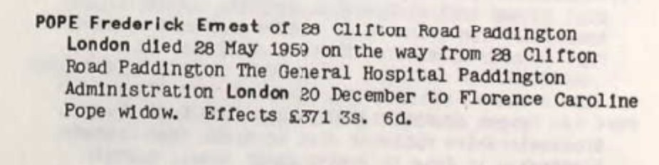
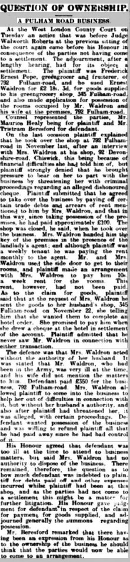
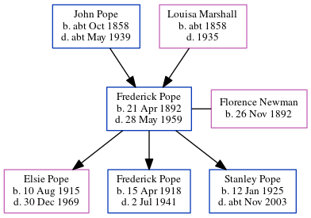

Frederick Ernest Pope 1892 - 1959
[ Home ] | [ Calendar ] | [ Surnames Index ] | [ Census Index ] | [ Family History ]A fruiterer and the child of John Pope (a bricklayer) and Louisa Marshall, Frederick Pope, the third cousin twice-removed on the father's side of Nigel Horne, was born in Chiswick, London, England on Apr 21, 18921,2,3,4, was baptized there on May 15, 1892 and married Florence Newman (with whom he had 3 children: Elsie Louisa Mary, Frederick George and Stanley Gordon) in Brentford, London, England around May 19155.
During his life, he was living at Eastbury Grove in Chiswick on Mar 31, 19011 and on Apr 2, 19116; at 792 Fulham Road, Fulham, London in 1920; at Upham Park Road in Chiswick in 1936; at 86 District Road, Sudbury, London on Sep 29, 19392; and at 28 Clifton Road, Paddington, London in 1959. He served in the army from Mar 8, 1917 to Jul 3, 1919 (soldier Number: 37531, Rank: Private, Corps: Hussars).
He died on May 28, 1959 in London4.
Parents
- John Isaac was born c. Oct 1858
- Louisa was born c. 1858
Children
- Elsie Louisa Mary was born on Aug 10, 1915
- Frederick George was born on Apr 15, 1918
- Stanley Gordon was born on Jan 12, 1925
Citations
- 1901 England, Wales & Scotland Census - Findmypast (was age 8 and the son of the head of the household)
- 1939 Register - Findmypast (was the head of the household)
- England & Wales births 1837-2006 - Findmypast
- England & Wales deaths 1837-2007 - Findmypast
- England & Wales Marriages 1837-2005 - Findmypast
- 1911 Census for England & Wales - Findmypast (was age 18 and the son of the head of the household)
Media
Frederick Ernest Pope - Probate

Fulham Chronicle - 5 Mar 1920

Hendon & Finchley Times July 24, 1936

Middlesex Baptisms - GBPRS-B-962016126-1
Silver War Badge Roll 1914-1920 - GBM-SILVERWAR-BADGES-13110
England & Wales births 1837-2006 - BMD/B/1892/2/AZ/000465/245
England Births & Baptisms 1538-1975 - R_888601770
England & Wales Government Probate Death Index 1858-2019 - GBOR/GOVPROBATE/C/1950-1950/00152501
Britain, Campaign, Gallantry & Long Service Medals & Awards - GBM/MCI/3557354
Britain, Campaign, Gallantry & Long Service Medals & Awards - GBM/MCI/3557305
1939 Register - TNA/R39/0946/0946I/016/27
Family Tree
Generated by ged2site. Last updated on Jun 11, 2024